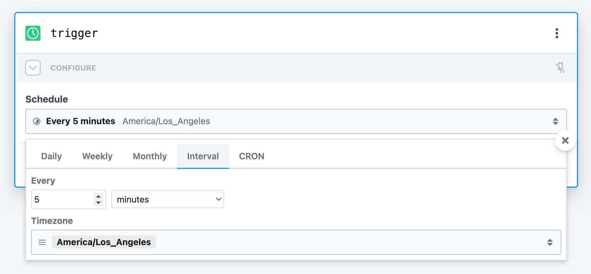
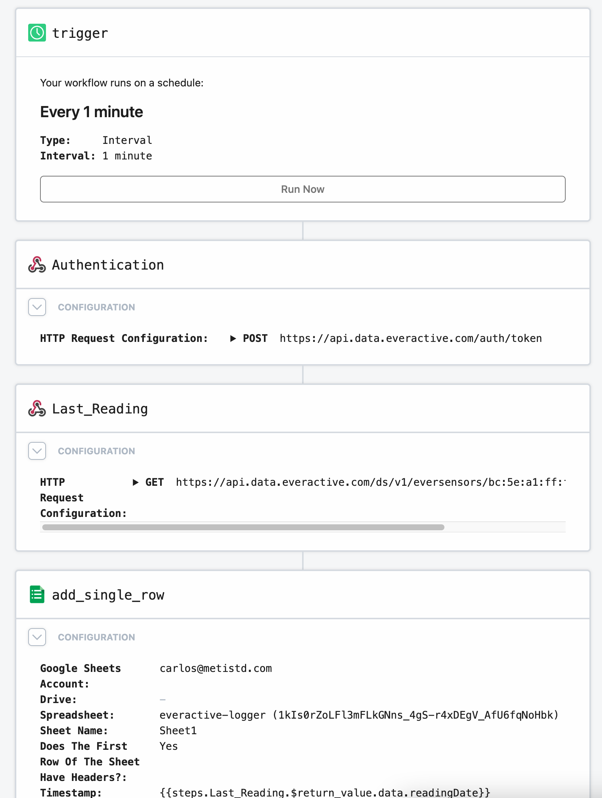

The Everactive Edge RESTful API gives you direct programmatic access to the data returned by Eversensors. The API provides endpoints to retrieve data based on time ranges, and shortcuts to get the last-available reading from a particular sensor. Typically, applications will poll these endpoints to get the most up-to-date information. In this article, we are going to use Pipedream.com as a mechanism to periodically poll the API for new data and log it in a spreadsheet on Google Docs.
The Plan üîó
The overall design of the solution we are going to implement looks like this:
click to zoom in
We will use the Pipedream.com service to orchestrate the requests for data to the Everactive Edge API and the insertion to a simple Google Sheet. The API will be polled every few minutes for the last reading of a particular sensor. Every response will be appended as a new row in the spreadsheet.
The Data Source üîó
The data we are looking for is produced by a Machine Vibration Eversensor attached to an industrial machine. Everactive’s Internet of Things technology is based on self-powered (no batteries required) sensing devices that can deliver rich data streams. Apart from the Everactive Web Console, the data is made available by the Everactive Edge Platform via different channels like the Restful API, Webhooks, or MQTT Subscriptions.
click to zoom in
The Everactive Console
click to zoom in
In our exercise, we will be polling data from the API endpoint that retrieves the last-available reading from this sensor. This endpoint is very simple: it acts as a shortcut, so we don’t need to specify incremental timestamps. The full API specification can be found here: https://everactive-ds-docs.readme.io/reference/get-eversensors-macaddress-readings-last
Setting up access to the API. üîó
Before we can make any request, we have to prepare a set of Keys that will grant us access to the API.
If you haven’t, use this guide to create your first set of API Credentials. Make sure you have included the privileges for User and Developer in the scope. Retrieve the Client ID and the Client Secret and keep them handy, we’ll need them for our exercise.
With Insomnia:
click to zoom in
Testing the API üîó
Now that we have our API Credentials let’s test them against the endpoints we need. You can use any REST Client, like curl, Insomnia, or Postman.
Login üîó
The first request we have to make is to the authorization endpoint to obtain a valid Token for subsequent requests. We’ll use the client id and secret we just created:
curl --location --request POST 'https://api.data.everactive.com/auth/token' \
--header 'Content-Type: application/json' \
--data-raw '{
"client_id": "{your client id goes here}",
"client_secret": "{your secret goes here}",
"grant_type": "client_credentials"
}'
With Insomnia:
click to zoom in
This returns a response with our token:
{
"access_token": "LONG_JWT_TOKEN_STRING",
"expires_in": 86400,
"token_type": "Bearer"
}
Note the
access_tokenfield, that is the value we are looking for.
Request some Data üîó
With our token in hand, we can now request some data. We are going to use the endpoint to fetch the last reading from a sensor using its MAC address (e.g. bc:5e:a1:ff:fe:00:56:fb):
curl --location --request GET 'https://api.data.everactive.com/ds/v1/eversensors/{sensor mac address}/readings/last' \
--header 'Authorization: Bearer {the token goes here}'
click to zoom in
Remember to put the token in the header.
This request will return an Eversensor reading by this schema: https://everactive-ds-docs.readme.io/reference/eversensors-overview#sensor-readings-data-schema
For example:
 click to zoom in
click to zoom in
Now that we have successfully tested our API Credentials, let’s put Pipedream to work for us to fetch and log the data.
Pipedream üîó
Pipedream.com defines itself as “the fastest way to automate any process that connects APIs”. To us, it has been a good tool to create fast prototypes and scenarios for the usage of our services. Pipedream offers a wide range of service integrations to combine with the Everactive Platform APIs. If you don’t have one, go to Pipedream.com and create a free account.
You’ll find plenty of documentation for your reference on their website https://pipedream.com/docs
The WorkFlow üîó
Remember the plan: fetch de data from the Everactive API and log it into a Google Spreadsheet. To accomplish this we need to create a Pipedream Workflow that looks something like this:
click to zoom in
It should be clear by now, but you will need a Google account to create the spreadsheet, any account, free or enterprise, will work.
Start üîó
Create a new workflow, let’s name it “everactive-api-logger”
Step 1 - Trigger üîó
The first step in our workflow is a Trigger. We will use a “Custom Interval” timer. Set a reasonable interval, like every 1 or 5 minutes:
click to zoom in
 click to zoom in
Step 2 - API Login üîó
The next step is to get a token from the Everactive API. Just like we did manually, we need to send a login request with our credentials. For this, we will add a step of the type “HTTP Request”. Enter the target URL and the request body. You can even import the curl request.
- Method: POST
- URL: https://api.data.everactive.com/auth/token
- Body: API Credentials
click to zoom in
Click on the “Test” button to get a sample response. You should see a parsed version of the same response we got from our manual test. The access_token should be there already.
click to zoom in
Step 3 Request the Eversensor reading üîó
Pipedream makes it easy to chain the results of one request into the next steps. Add another step of the same type “HTTP Request”. This time the request requires authentication information to access the data. The Authentication method is Bearer Token and the token value comes from the previous step.
- Method: GET
- URL: https://api.data.everactive.com/ds/v1/eversensors/bc:5e:a1:ff:fe:00:56:fb/readings/last
- Authentication: Bearer Token
- Token Path: {{steps.custom_request.$return_value.access_token}}
click to zoom in
Click the “Test” button on this step and see the Eversensor reading data.
click to zoom in
Step 4 The Data Log üîó
For this step, we will need a Google Sheet to receive the Eversensor data. Create a simple Sheet called “everactive-logger” with two columns: “Timestamp”, and “Reading”, for example.
Now let’s add a step in our workflow to “Add Row to Google Sheets”. Follow the form to connect your Google Account and find the Sheet we just created. The titled columns will appear as fields in the step configuration form.
click to zoom in
click to zoom in
We need to map the columns in the Sheet to the fields from our reading response in the previous Step. Pipedream makes it very easy to locate the fields in the parsed response and copy the selection path. Select the “Reading Date” from the object tree and copy the path to the “Timestamp” column, then do the same for another part of the object, like the “Temperature Measurements”, and place the path in the “Reading” field.
click to zoom in
click to zoom in
click to zoom in
Test the step and see the data being inserted into the spreadsheet. It’s that easy!
click to zoom in
Step 5 Ship it! üîó
Now that we have our workflow, it is time to save it and put it to work. This is what the full workflow looks like:
 click to zoom in
Once it is running, you should see the data come in at every interval into a new row in the spreadsheet.
click to zoom in
PS üîó
This was a very simple example of how to work with the Everactive Edge Platform API, but we hope that it is useful to illustrate the basic concepts of the RESTful API and the structure of the data. In other articles, we will show how to work with other services of the Platform, like the Webhooks subscriptions. We might even use Pipedream again for that, so don’t throw away your account just yet ;)
Disclaimer: I work for Everactive as a Senior Principal Engineer. All the articles in the Everactive series are an attempt to showcase our technology and, at least for me, to learn something in the process.